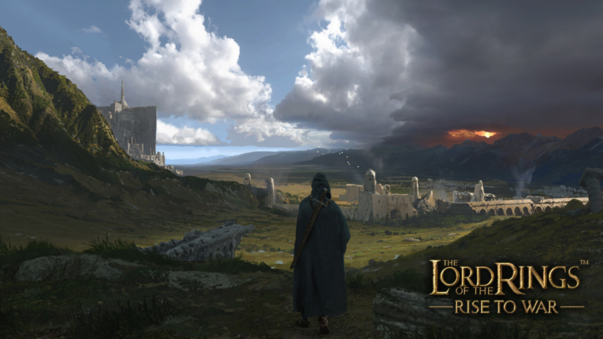
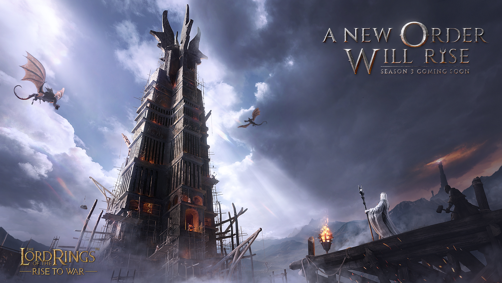

Rise to War
The Lord of the Rings : Rise to War est un jeu de stratégie se déroulant dans l'univers de la célèbre œuvre de J.R.R. Tolkien. Votre but sera de récupérer l'Anneau unique, et pour ce faire, vous devrez construire votre propre armée et prendre les terrains de vos adversaires.
Le saison 2 se termine le 8 Février et la saison 3 commencera le 10 Février pour les premiers serveurs.
Alors avez vous réussis à faire gagner votre faction dans votre serveur?
La saison 2 a apportée 6 nouveaux commandants.
Elladan fils d'Elrond, Imrahil prince de Dol Amorth et Thorin haut roi des nains pour le bien.
Béruthiel ancienne renne du Gondor, zegrid un chef des tribus du Dunland et Adûnae qui était le bras droit du
Roi Sorcier pendant la guerre contre Arnor seront ajoutés chez le mal.